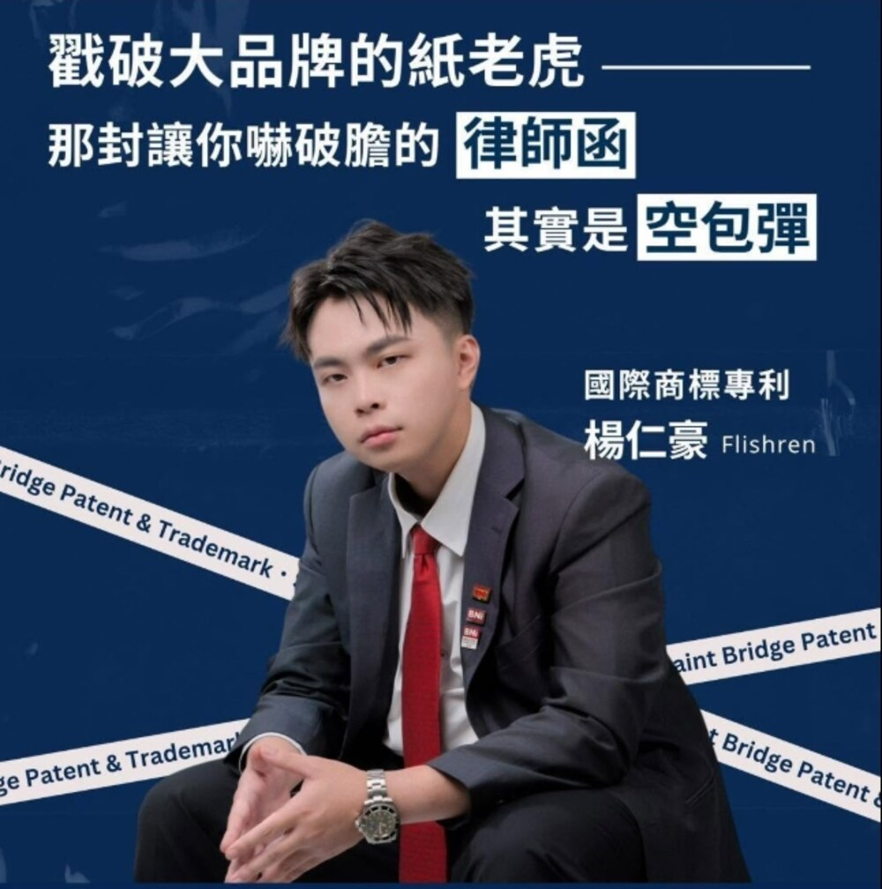

商標申請
幫助企業保護品牌與產品的獨特識別符號。商標可以是文字、圖像、標誌、聲音或組合，用於區別自家產品服務與他人的不同——它是整份品牌資產裡，最先該被登記下來的一項。
ARCHIVE / 00— 主檔
聖橋國際專利商標事務所・第二代主持人
品牌 IP 規劃師
人民與政府之間，神聖溝通的橋樑。
我不只替你申請權利，更為你的品牌打造智慧資產的護城河。從商標、專利到著作權，把散落的無形資產整理成一份別人拿不走的長期價值。
一位懂商業的智財專家，用接班人的同理心與商業操盤手的邏輯，守護你的品牌資產。
ARCHIVE / 01— 傳承
一間成立於民國七十年的事務所，一位在該過年輕人生活的年紀選擇回家扛下責任的第二代。這是這頁最該被讀完的一段。
父親因工作機會自高雄移居台南，選擇自行創業，將智慧財產權作為終身專業。對他而言，這不只是一份事業，更是賴以維生的「吃飯工具」。聖橋國際專利商標事務所自此成立於民國七十年。
父親離世。一間累積了四十年實務經驗的事務所，一度面臨是否延續下去的抉擇。
他原本規劃投入貿易與銷售工作——過去曾在金門生活，也做過百貨專櫃與物流相關工作，長期累積的是銷售與市場經驗。直到重新盤點家庭支出與現實壓力，他才意識到，以剛畢業的身分要在外面達到同樣的經濟規模並不容易；回到家業，反而成為一條能真正承擔責任的路。這一年他回到台南，正式成為第二代負責人。
旁註：接班之初，他剛結婚。
接手後，他逐步把事務所的定位從單純的案件處理，轉為品牌與智慧財產權的長期顧問角色。他公開分享過這段路：2021 年接下父親留下那瀕臨破產的 40 年老字號智財事務所，從年營收不到 200 萬的谷底，到 2024 年成功將業績翻了 6 倍以上。
數據引自本人公開分享。
延續父親留下的，不只是事務所本身，而是一份對專業、對品牌、對長期經營者的責任感。
ARCHIVE / 02— 接班
台灣市場對智慧財產權的理解普遍薄弱。落差往往不是出在法規，而是出在一個很常見的誤會。
完成公司登記或商號登記，就等於擁有商標權，名字從此屬於自己。
兩者是不同的制度。不少業者直到發生爭議才發現，自己用了很久的名字，權利從未被保障。
接手後，事務所開始承接大量老品牌與二代轉型的案件。許多使用了數十年的品牌名稱，因為屬於通用詞或百家姓，過去多次申請商標未果；卻也同時卡在「改名成本過高」的困境——更名不只是換一塊招牌，可能抹去多年累積的市場記憶與品牌價值。
若品牌已長期經營、具備實質辨識度，就值得被制度看見。所以團隊選擇投入較高難度的案件，透過補充說明與市場證明，替老品牌爭取回應有的商標權利。

ARCHIVE / 03— 專業
我們不是一間只具備申請能力的專業事務所。除了全方位規劃，也指導客戶如何透過商法策略穩固企業資產、有效排除競爭同業，同時協助串接資源。
幫助企業保護品牌與產品的獨特識別符號。商標可以是文字、圖像、標誌、聲音或組合，用於區別自家產品服務與他人的不同——它是整份品牌資產裡，最先該被登記下來的一項。
保護發明創新的重要程序，為發明者提供法律保護與獨佔權利。可以是新的產品、技術、製造方法，或具獨特功能的發明。
保護創作作品，為作者提供法律保護與權益。涵蓋文學、音樂、戲劇、藝術、建築、電影等各種創作形式。
專利部
商標部
國外部
法律諮詢
曾擔任國內外多家知名廠商、上市上櫃公司的長期顧問，也曾擔任台南縣市圖書文具公會顧問。團隊具備跨國界操作經驗與國際化視野、跨文化溝通能力，熟悉各國智財法規與合規要求。
ARCHIVE / 04— 牌桌
他是德州撲克的愛好者。牌桌教的不是運氣，是在資訊不完整的時候，怎麼把決定做出來。
品牌還沒上桌之前，先把商標、專利、著作權登記好。等到別人已經跟注了才想保護，成本完全不是同一回事。
同樣一手牌，先手跟後手的價值差很多。商標申請的時間點，往往比名字取得好不好更關鍵。
高難度的案件短期看起來不划算。但替一個老品牌爭回用了三十年的名字，長期價值是算得回來的。
有些名字真的救不回來。誠實告訴客戶及早改，比硬撐一場注定會輸的訴訟便宜得多。
接手一間瀕臨中斷的老事務所，本質上也是一次資訊不完整的下注。
ARCHIVE / 05— 商務團隊
他把事務所的一句老話延伸到團隊裡：「客戶越好，我們也會更好。」在商務團隊裡，這句話的意思是——夥伴的生意做得起來，自己的專業才有真正被需要的位置。
ARCHIVE / 06— 對象
品牌剛起步，想保護自己的心血，卻不知道從哪裡開始。
已經在市場上打拼一段時間，擔心被商標蟑螂或同業惡意攻擊。
想更穩健地拓展商業版圖，確保品牌變現這條路萬無一失。
如果其中一項說中了你，那就從一次對話開始。
ARCHIVE / 07— 聯繫
一通電話，專程服務。